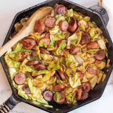

Kielbasa and Cabbage

Another easy and cheap recipe that is a household staple!
Ingredients
- 1 package of kielbasa
- 1 bag of coleslaw
- 1 small onion
- 4 cloves of fresh garlic
- 1 pack of your favorite noodles
- salt and pepper to taste
Steps
- Add diced onion, kielbasa (sliced), and garlic (crushed) to a pan on medium heat with some olive oil. Cook until onions become translucent.
- Add cabbage to pan and cover. Cook until cabbage is soft.
- In a large pot, bring water to a boil and cook noodles as directed by packaging.
- Mix and serve.
Return to Main Page